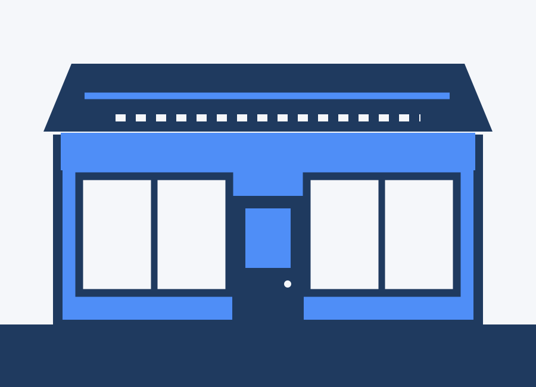

Thoughtful sourcing
We choose quality ingredients and work with seasonal flavors, letting the ingredients shine in every bake.
Small batches. Big-hearted baking.
A neighborhood bakery with heart
North Star Bakery brings people together with honest ingredients, patient craft, and the kind of welcome that feels like home.
Our story
North Star Bakery was built around a simple idea: everyday bread can be something special. We bake in small batches, give our dough the time it needs, and make room at the counter for one more neighbor.
Today, that same care goes into every loaf, pastry, and custom cake. We hope you find something here that makes you want to stay for a little while.

We choose quality ingredients and work with seasonal flavors, letting the ingredients shine in every bake.
From slow-fermented dough to carefully finished cakes, we believe the little details make a big difference.
Our bakery is a place to meet, share a treat, and feel a little more at home in the neighborhood.
The hands behind the bakes
A small team, a lot of care, and very early mornings.
Keeps an eye on the sourdough and always saves the first warm loaf for the team.
Brings a light touch to seasonal pastries and a very good cinnamon-sugar swirl.
Behind the scenes
Our bakers start before sunrise, shaping dough and filling the room with the smell of fresh bread.